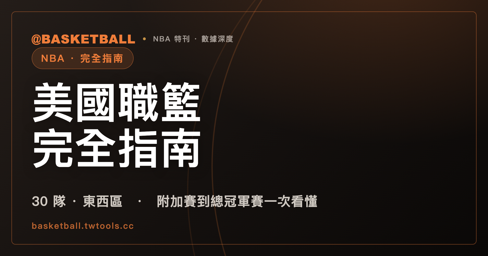

NBA 完全指南：30 隊架構、賽季節奏與冠軍格局一次讀懂
NBA 由東西區各 15 隊、共 30 隊組成，例行賽每隊 82 場，例行賽後段先打附加賽決出最後兩張季後賽門票，再進入七戰四勝制的季後賽與總冠軍賽。

NBA · 完全指南｜聯盟架構 · 賽季節奏 · 冠軍格局
NBA（美國職籃）是全球關注度最高的職業籃球聯盟，由東區與西區各 15 隊、合計 30 支球隊組成。對剛開始看球的球迷來說，NBA 的賽制有幾個外人不容易一次搞懂的環節：例行賽打完不是直接進季後賽，中間還夾著一輪「附加賽」；近年又多了一項季中的 NBA Cup；季後賽也不是單淘汰，而是每輪都要打到四勝才算過關。這篇文章從聯盟的基本架構開始，依序整理賽季怎麼走、季後賽門票怎麼決定、近三季的冠軍表現，以及聯盟歷史上的冠軍格局，最後附上選秀與自由市場的年度行事曆，幫助第一次認真看 NBA 的球迷建立一份可以反覆查閱的總覽。截至 2026 年 7 月，聯盟剛結束 2025 到 2026 年賽季，紐約尼克（New York Knicks）拿下隊史相隔 53 年的總冠軍，這也是本文會重點整理的一段近期紀錄。
聯盟怎麼組成的：30 隊、東西區、分組
NBA 目前共有 30 支球隊，分成東區與西區兩個聯盟，每區各 15 隊。這個「東西區各 15 隊」的架構，是理解 NBA 例行賽賽程安排、附加賽名額、季後賽晉級規則的基礎，後面提到的附加賽第 7 到 10 種子、季後賽每區 8 隊，都是建立在這個東西區並存的骨架之上。
在東西區之下，聯盟再各自細分為 3 個分組，每組 5 隊。東區的三個分組分別是大西洋組、中央組、東南組；西區則分為西北組、太平洋組、西南組。分組的存在主要影響例行賽賽程的安排方式（同分組球隊交手場次通常較多），季後賽的名次排序則以整個聯盟（東區或西區）的戰績為主：分組冠軍不保證高順位，但在同戰績球隊比序時，分組相關條件仍是官方 tiebreaker 的判定項目之一。這種「先分組排賽程、再看整區排名次」的設計，讓 NBA 的例行賽賽程本身就帶有地理與歷史對抗的色彩，同時又能確保季後賽名額分配以整區戰績為準。
對第一次接觸 NBA 的球迷來說，這套「30 隊、兩區、六分組」的架構，其實可以簡化成一句話來記：先看一支球隊屬於東區還是西區，這決定了它整個賽季要跟哪些球隊搶季後賽名額；再看它屬於哪個分組，這主要影響例行賽賽程怎麼排（同戰績比序時分組條件才會派上用場）。掌握這個層級關係，後面提到的附加賽、季後賽名次順位，理解起來就會順暢許多。
賽季怎麼走：例行賽、NBA Cup、附加賽、季後賽
NBA 的一個完整賽季，大致可以拆成四個階段來理解。
第一階段是例行賽。每支球隊固定打 82 場比賽，賽季從 10 月下旬開打，一路打到隔年 4 月中旬，橫跨半年以上的時間。82 場的規模，讓 NBA 的例行賽本身就是一場長期抗戰，球隊的傷病管理、輪換深度、賽程密集度（背靠背比賽的多寡），都會直接反映在最終的戰績排名上。
第二階段是季中的 NBA Cup，這是聯盟從 2023 到 2024 年賽季起才新增的賽制。NBA Cup 在例行賽期間穿插進行，球隊會被分組打一輪小組賽，勝出者再進入淘汰賽，最終在決賽產生冠軍；需要特別留意的是計分方式：NBA Cup 的小組賽與淘汰賽場次同時計入例行賽戰績，只有決賽這一場不計入。換句話說，NBA Cup 是嵌在漫長例行賽賽季裡的一項賽中賽，替球季中段增加一個獨立的競爭焦點，絕大多數 Cup 場次仍然算在 82 場例行賽之內。
第三階段是附加賽（Play-In）。這項制度現行版本自 2020-21 賽季起採行、2022 年由聯盟正式列為常設賽制：東西區例行賽戰績第 7 到 10 名的四支球隊，要先打一輪附加賽，決定最後兩張季後賽門票。換句話說，東西區戰績前 6 名的球隊，例行賽結束後就直接拿到季後賽門票，不需要再多打一輪；真正要透過附加賽拚搏的，只有排名第 7 到 10 名這四支球隊。附加賽的設計，讓例行賽戰績排在中段偏後的球隊，不會因為差了一兩個名次就直接與季後賽無緣，也讓球季最後階段的中段班戰局多了一層懸念。想掌握目前哪些球隊卡在附加賽名次邊緣，可以直接查看本站的即時戰績頁面 /standings/。
第四階段是季後賽與總冠軍賽。東西區各取 8 隊晉級季後賽，每一輪都採七戰四勝制，一路打到東西區冠軍賽，最後由兩區冠軍在 6 月進行總冠軍賽，同樣是七戰四勝制。七戰四勝制意味著單場爆冷不會直接決定一個系列賽的走向，球隊必須在數週之內連續證明自己的實力，這也是為什麼季後賽常被視為比例行賽更能反映球隊真實深度與臨場調度能力的舞台。整個賽季從 10 月下旬的例行賽開打，一路走到 6 月的總冠軍賽落幕，跨度將近九個月，這也是為什麼 NBA 球季常被形容為一場橫跨半年以上的馬拉松賽事。
近三季總冠軍表
下表整理近三個賽季的總冠軍賽結果：
| 賽季 | 總冠軍 | 亞軍 | 系列賽比數 |
|---|---|---|---|
| 2023-24 | 波士頓塞爾提克（Boston Celtics） | 達拉斯獨行俠（Dallas Mavericks） | 4:1 |
| 2024-25 | 奧克拉荷馬雷霆（Oklahoma City Thunder） | 印第安納溜馬（Indiana Pacers） | 4:3 |
| 2025-26 | 紐約尼克（New York Knicks） | 聖安東尼奧馬刺（San Antonio Spurs） | 4:1 |
這三個賽季的總冠軍賽，呈現出三種不同的系列賽節奏。2023-24 賽季，波士頓塞爾提克以 4 勝 1 敗擊敗達拉斯獨行俠奪冠，系列賽相對一面倒。2024-25 賽季則完全相反，奧克拉荷馬雷霆與印第安納溜馬一路纏鬥到第七戰，最終雷霆以 4 勝 3 敗驚險封王，是三個賽季裡唯一打滿七戰的總冠軍賽。2025-26 賽季，紐約尼克以 4 勝 1 敗擊敗聖安東尼奧馬刺，拿下隊史自 1973 年之後、相隔 53 年的總冠軍；尼克隊史此前的兩座冠軍分別是 1970 年與 1973 年，這意味著在 1973 年到 2026 年之間，尼克隊有超過半個世紀的時間沒有站上總冠軍的頒獎台。對長期關注 NBA 的球迷來說，一支歷史悠久的球隊時隔逾半世紀重新奪冠，本身就是這三個賽季裡最具份量的一段紀錄。
把這三個賽季的冠軍組合放在一起看，還可以發現一個現象：三個賽季的總冠軍球隊各不相同，亞軍球隊也全數不同，沒有任何一支球隊連續兩個賽季打進總冠軍賽。這種冠軍歸屬年年變動的狀態，某種程度反映出近幾季 NBA 西區與東區的競爭都相當激烈，沒有單一球隊能夠連續壟斷冠軍賽門票。此外三場總冠軍賽的系列賽比數分別是 4:1、4:3、4:1，場次長短交替出現，也提醒球迷不能單純用「系列賽比數」去回推球隊實力差距，像 2024-25 賽季那樣打滿七戰的系列賽，往往代表兩隊實力伯仲之間，勝負常在最後一兩場比賽的關鍵回合才真正分曉。
歷史冠軍格局：塞爾提克與湖人的兩強對峙
把時間軸拉得更長來看，NBA 隊史冠軍數的排行榜，長期由兩支球隊主導。截至 2026 年 7 月，波士頓塞爾提克以 18 座總冠軍，是隊史冠軍數最多的球隊，這個數字是在 2024 年奪冠之後累積而成；洛杉磯湖人則以 17 座冠軍緊追在後，是隊史冠軍數第二多的球隊。這兩支球隊合計 35 座冠軍、遙遙領先其他任何單一球隊，也讓「塞爾提克 vs 湖人」在 NBA 的歷史敘事裡，長期扮演最具份量的兩強對峙角色。
不過 2025-26 賽季奪冠的紐約尼克，目前隊史冠軍數仍遠不及塞爾提克與湖人這兩支長青豪門，53 年首冠的意義，更多在於「時隔之久」而非「累積冠軍數之多」。這也是理解 NBA 冠軍格局時一個容易混淆的地方：一支球隊「最近奪冠」與一支球隊「隊史冠軍數最多」，是兩件完全不同的事，前者看的是近況，後者看的是超過七十年的聯盟歷史積累。
對剛開始關注 NBA 的球迷來說，建議把這兩層資訊分開記憶：一層是「近況層」，也就是本文前面整理的近三季總冠軍名單，反映的是目前聯盟的競爭態勢；另一層是「歷史層」，也就是塞爾提克 18 冠、湖人 17 冠這種跨越數十年累積下來的隊史紀錄，反映的是一支球隊長期的成功程度。看比賽轉播或討論串時，常會同時聽到這兩種資訊交錯出現，分清楚哪一句話講的是近況、哪一句話講的是歷史，有助於避免對球隊實力產生錯誤的第一印象。
2025-26 賽季終局速覽
以下整理 2025-26 賽季結束時（截至 2026 年 6 月 14 日）東西區戰績排名前三的球隊。
東區戰績前三：
| 排名 | 球隊 | 戰績 | 勝率 | 落後場次 |
|---|---|---|---|---|
| 1 | 底特律活塞（Detroit Pistons） | 60 勝 22 敗 | .732 | — |
| 2 | 波士頓塞爾提克（Boston Celtics） | 56 勝 26 敗 | .683 | 4 |
| 3 | 紐約尼克（New York Knicks） | 53 勝 29 敗 | .646 | 7 |
西區戰績前三：
| 排名 | 球隊 | 戰績 | 勝率 | 落後場次 |
|---|---|---|---|---|
| 1 | 奧克拉荷馬雷霆（Oklahoma City Thunder） | 64 勝 18 敗 | .780 | — |
| 2 | 聖安東尼奧馬刺（San Antonio Spurs） | 62 勝 20 敗 | .756 | 2 |
| 3 | 丹佛金塊（Denver Nuggets） | 54 勝 28 敗 | .659 | 10 |
從這兩張表可以看出一個有意思的對照：東區戰績最好的底特律活塞，例行賽勝率為 .732；而西區戰績最好的奧克拉荷馬雷霆，例行賽勝率高達 .780，兩者相差將近 5 個百分點。同時，2025-26 賽季的總冠軍紐約尼克，例行賽戰績其實只排在東區第 3 名（53 勝 29 敗），落後東區龍頭底特律活塞達 7 個勝場；而總冠軍賽的對手聖安東尼奧馬刺，例行賽戰績反而是西區第 2 名（62 勝 20 敗），只落後西區龍頭奧克拉荷馬雷霆 2 個勝場。這也說明了 NBA 季後賽七戰四勝制的特性：例行賽戰績排名靠前不代表在季後賽系列賽裡穩居優勢，東區第 3 名照樣有機會過關斬將拿下總冠軍。想查看最新、即時更新的完整戰績排名，可以到本站的 /standings/ 頁面查詢。
選秀與自由市場的年曆
除了賽季本身的節奏，NBA 每年還有兩個對球隊陣容影響深遠的時間點，分別是新人選秀與自由市場。
新人選秀固定在每年 6 月舉行，共分兩輪進行，是各隊補充年輕球員、調整陣容結構的主要管道之一。選秀結束後不久，聯盟便進入 7 月初開市的自由市場階段，這是球隊簽下自由球員、調整薪資結構的關鍵窗口。另外，球季進行到年中，聯盟還設有交易截止日，固定訂在 2 月，這是各隊在球季中段透過交易調整陣容的最後機會，過了交易截止日之後，球隊就只能靠現有陣容打完剩下的例行賽與季後賽。
把選秀、自由市場、交易截止日這三個時間點串起來看，可以發現 NBA 的陣容調整並非只集中在某一個時間點，而是分散在一整年的不同階段：6 月選秀補充新血、7 月自由市場調整核心陣容、隔年 2 月交易截止日做球季中段的微調。這也是為什麼關注 NBA 的球迷，即使在沒有比賽進行的休賽期，仍然有持續追蹤的理由。
新手怎麼開始看
如果是第一次認真關注 NBA 的球迷，建議可以按照以下順序建立觀賽習慣。首先，弄清楚自己感興趣（或所在時區轉播方便收看）的球隊落在東區還是西區、哪一個分組，這會決定這支球隊例行賽的對戰組合與賽程節奏。接著，留意例行賽進行到 2 月的交易截止日前後，是否有陣容異動的消息，這往往是球隊球季走向的重要轉折點。
到了 4 月中旬例行賽打完之後，重點會轉移到附加賽：如果關注的球隊戰績卡在東西區第 7 到 10 名之間，就要特別留意附加賽的賽果，因為這關係到球隊是否還有機會晉級正式的季後賽。真正進入季後賽之後，每一輪都是七戰四勝制，系列賽往往會拖上一到兩週，和例行賽單場定輸贏的節奏完全不同，值得用不同的心態去追蹤。整個賽季不管是想查當下的例行賽排名、附加賽邊緣的競爭態勢，或是季後賽期間東西區的晉級對戰表，都可以直接到本站的即時戰績頁面 /standings/ 查詢，掌握截至最新一場比賽為止的完整數據。
本文所述聯盟架構、賽季賽制與冠軍紀錄，整理自 ESPN 賽果逐場驗證資料與本站戰績資料庫；文中涉及特定賽季的戰績數字，均以標注的賽季與截止日期為準。
常見問題
NBA 有幾支球隊，怎麼分組？
NBA 目前共有 30 支球隊，分成東區與西區兩個聯盟，每區各 15 隊。東西區之下再各自細分為 3 個分組、每組 5 隊，東區包含大西洋組、中央組、東南組，西區包含西北組、太平洋組、西南組。分組主要影響例行賽賽程安排；季後賽名次以整個東區或西區的戰績為主，分組條件在同戰績比序時仍會進入官方 tiebreaker。
NBA 例行賽打幾場，球季多長？
每隊例行賽固定為 82 場，球季從 10 月下旬開打，一路進行到隔年 4 月中旬。例行賽期間還會穿插季中的 NBA Cup（自 2023-24 賽季起舉行），NBA Cup 決賽這一場不計入例行賽戰績。整個球季一路延伸到 6 月的總冠軍賽，前後跨度將近九個月。
附加賽（Play-In）是什麼，為什麼會有這個賽制？
附加賽是東西區例行賽戰績第 7 到 10 名的四支球隊，在例行賽結束後、正式季後賽開打前先進行的一輪比賽，用來決定最後兩張季後賽門票。這項制度現行版本自 2020-21 賽季起採行、2022 年正式列為常設賽制，讓例行賽戰績排在中段偏後的球隊，仍有機會透過附加賽拚進正式的季後賽，也讓球季尾聲的中段班戰局多一層懸念。
NBA 隊史冠軍數最多的球隊是哪一隊？
截至 2026 年 7 月，波士頓塞爾提克以 18 座總冠軍（2024 年奪冠後累積）是隊史冠軍數最多的球隊，洛杉磯湖人則以 17 座緊追在後，兩隊合計 35 座、遙遙領先其他任何單一球隊，長期是 NBA 歷史上最具份量的兩強對峙。
2025-26 賽季的總冠軍是誰？這座冠軍有什麼特別之處？
2025-26 賽季總冠軍賽由紐約尼克以 4 勝 1 敗擊敗聖安東尼奧馬刺，拿下隊史第三座總冠軍，也是繼 1970 年、1973 年之後，相隔 53 年的隊史首冠。尼克在例行賽只排東區第 3 名，對手聖安東尼奧馬刺則是西區戰績第 2 名的球隊，兩隊的例行賽排名都顯示，季後賽七戰四勝制之下，例行賽排名不完全等同於季後賽的最終結果。